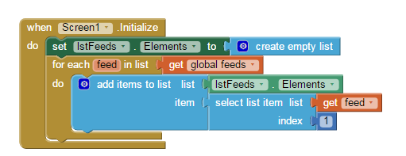

Allgemeine Überlegungen zur App-Entwicklung
- Programmierung eines RSS-Feed Readers
- für Stormstory WebSite (http://stormstory.de/feed/).,NV-Blog (http://nvblog.isurfstormarn.de/index.php/feed/) und eigenen RSS-Feed von einer belibigen Website öfnnen
- schlichtes Design
- verschiedne Buttons um zwischen den einzelenen beiträgen wechseln zu können
- Textfeld mit der Möglichkeit zum scrollen
- Textfeld mit der Beitragnummer
- Überschrift des Beitrages soll über dem eigentlichen beitrag angezeigt werden als seperater Block
Was ist ein RSS-Feed überhaupt?
RSS (Really Simple Syndication) sind Dateiformate für Web-Feeds. Die Bereitstellung von Daten im RSS-Format wir auch als RSS-Feed bezeichnet.
Informationenen über App Inventor
Ursprünglich wurde App Inventor von dem Unternemen Google Inc. als eine Entwicklungsumgebung entwickelt, um Anwendungen für Android
zu konzipieren. Android ist sowohl ein Betriebssystem als auch eine Software Plattform für mobile Geräte wie Smartphones oder Tablets.
App Inventor ermöglicht es, per Drag and Drop, grafische Blöcke zu erstellen.
Als eine closed Beta wurde die Software erstmals am 12. Juli 2010 für registrierte Nutzer zur Verfügung gestellt. Seit dem 15. Dezember
gleichen Jahres war sie öffentlich zugänglich.
App Inventor arbeitet mit den Open-Blocks von der Java-Bibliothek. Die Software arbeitet mit dem Hintergrund, den Einstieg in die
Programmierung von Applikationen für Smartphones/Tablets zu erleichtern
Aufgebaut ist App Inventor in zwei Arbeitsebenen; die Design-Ebene sowie die Blocks-Ebene.
Die Design-Ebene ermöglicht es dem Nutzer ein Layout für die eigene App zu gestalten. Dafür stehen sehr viele verschiedene
Auswahlmöglichkeiten zur Verfügung. In der Blocks-Ebene können die einzelnen Kompotten der verschiednen Blöcke zueinander in
Beziehung gesetzt werden und durch Parametern sowie Kontrollstrukturen in eine logische Ordnung gebracht werden. Beispielsweise
gibt es Blöcke für for-Schleifen und mathematischen Funktionen.
Das App-Design
Erklärung der einzelnen Blocks
Der erste Block ist dafür zuständig, eine Liste zu erstellen, aus welcher der entsprechende RSS-Feed ausgewählt werden kann. Zur Auswahl stehen der NV-Blog, die Stormstory-WebSite und ein eigener Feed, für welchen der Nutzer eine eigene rssUrl eingeben muss. In der Liste wird jeweils die Überschrift der drei Komponenten angezeigt.

Wenn die App geöffnet wird, ist “Screen 1” zu sehen. Ebenfalls auf “Screen 1” zu sehen ist ein Textbutton mit “wähle Feed … “. Wenn der Nutzer diesen anklickt, wird dieser auf eine Liste (”set IstFeeds.Elements to create empty list”) weitergeleitet. Dieser Liste werden die oben genannten “global feeds” durch den blauen Block hinzugefügt und der Nutzer kann einen auswählen.
Wählt der Nutzer “Eigener Feed” aus der Liste, wird ihm eine Nachricht zusammen mit einem Textfeld angezeigt, in welches eine beliebige rssUrl eingetragen werden kann (zu sehen im if-Block). Wurde ein eigener Feed angegeben oder einer aus der vorgegebenen Liste ausgewählt, wird geprüft, ob dieser existiert. Wenn ja wird dieser ausgeführt und wenn nicht wird dem Nutzer dies ebenfalls mitgeteilt.

Zur Navigation werden vier Buttons verwendet. Der erste Button (btnFirst) bringt den Nutzer zum ersten Beitrag, dieser trägt die index-Nummer “1”. Der zweite Button (btnPrevious) dient dazu, zum vorigen Beitrag in der Liste zu navigieren. Dafür wird der “global itemIndex” abgefragt und minus eins gerechnet, um die index-Nummer des vorigen Beitrags zu ermitteln. Der nächste Button (btnNext) funktioniert nach dem gleichen Prinzip, es wird lediglich nicht minus, sonder plus eins auf den “global itemIndex” gerechnet, um zu dem nächsten Beitrag in der Liste zu gelangen. Der letzte Button (btnLast) bringt den Nutzer zum letzten Beitrag in der Liste. Hierfür wird die gesamte Länge der Liste ermittelt und die index-Nummer auf diesen Wert gesetzt.
Um die Buttons nutzen zu können, müssen diese vorher aktiviert werden. Dafür ist der nächste Block zuständig.
Um den Feed anzuzeigen werden die Labell “lblStatus” und “lblDescription” und der Button “Item” benötigt. Zunächst wird der “global itemIndex” festgesetzt, beim Start ist dieser auf eins festgelegt. Auf welchem Beitrag man sich zur Zeit befindet, wird durch “lblStatus” im Schema “1 von 1” angezeigt. Dann wird der Inhalt des RSS-Feed angezeigt, die Überschrift im “btnItem” und der Text im “lblDescription”.
Stundenprotokoll über unsere Arbeit
Mittwoch, der 22.02.2017
Wir haben uns heute damit auseinandergesetzt, wie man einen RSS-Feed mithilfe von XML erstellt. Da wir noch keine Erfahrungen über den RSS-Feed gesammelt haben, informierten wir uns zuerst generell über dieses Thema. Mit dem neu gewonnenem Wissen probieren wir aus, einen RSS-feed selber zu schreiben. Hierfür verwendeten wir das Programm Notepad. Unser erster Versuch:Für den weiteren Verlauf unseres Projekts benötigen wir keinen eigenen RSS-Feed, da beispielsweise der RSS-Feed von Stromstory und dem NV-Blog öffentlich zugänglich ist.
Donnerstag, der 23.02.2017
Wir haben uns heute damit beschäftigt, uns den RSS-Feed der Stormstory Website genauer anzuschauen und gleichzeitig zu verstehen. Ein Problem, das uns sofort aufgefallen ist ,war die Zeile “Du musst dich anmelden, um diesen Inhalt zu sehen”, welche in der Beschreibung jedes Beitrags steht.
Da die Behebung dieses Problems nicht in unseren Händen liegt, sondern beim Stormstory-Team selber, haben wir uns dafür entschieden, eine App zu entwickeln, die verschiedene RSS-Feeds anzeigen kann z.B. auch unseren NV-Blog, da in diesem nicht die oben markierten Zeile zu finden ist, sondern der Text der Website. In der zweiten Hälfte der Stunde haben wir uns mit dem Programm App Inventor 2 befasst. Mit dieser Software von Google ist es möglich, per Drag and Drop, Apps für Smartphones/Tablets zu programmieren. Um dieses besser zu verstehen, haben wir uns verschiedene Tutorials auf Youtube angeschaut.